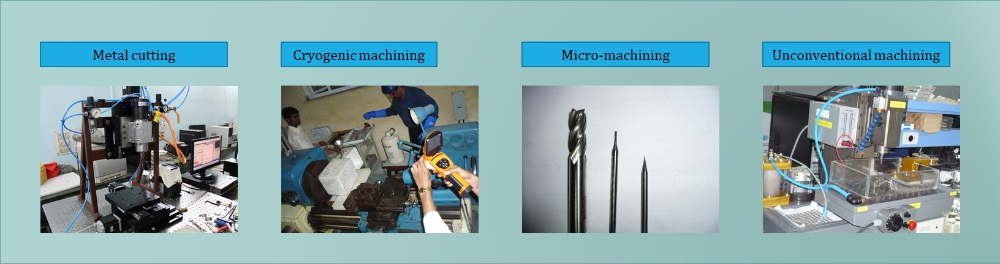
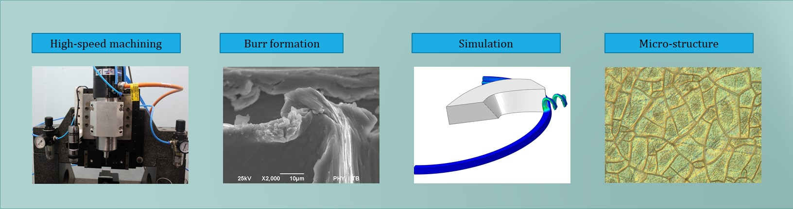

Brief Introduction
Associate Professor in the Department of Mechanical Engineering at Indian Institute of Technology (ISM) Dhanbad, India . PhD in Mechanical Engineering from Indian Institute of Technology Bombay Mumbai India, in 2013 and M.E. degree in Production Engineering from Shri GS Institute of Technology and Science, Indore India, in 2006.
E-mail: vivek@iitism.ac.in | vbajpai007@rediffmail.com
Phone(O): +91-3262235075
Education
Ph.D. (July 2008 to Jan. 2013)
Click here to see a glimpse of PhD work
Indian Institute of Technology, Bombay
MH, India
"Characterization and Modeling of Pyrolytic Carbon Micromachining for Creation of Engineered Features"
PhD Supervisor:Prof. Ramesh K Singh
M.E. in Production Engieering (July 2006 to June 2008)
Shri GS Institute of Technology and Science
Indore, Madhya Pradesh, India
First Division
ME Supervisor:Prof. Durgesh Joshi
Graduation, B.E. in Mechanical Engineering (July 2002 to Jan. 2006)
Rewa Engineering College
Rewa, Madhya Pradesh, India
First Division
Work Experience
Associate Professor
IIT(ISM) DHANBAD, India
Department of Mechanical Engineering
Aug, 2015 - present
Assistant Professor
Mahindra Ecole Centrale Hydrabad, India
School of Engineering
Aprl, 2014 - Aug, 2015
Post doctoral
Ulsan National Institue of Technology and Science, Ulsan, South Koarea
Department of Mechanical Engineering
March, 2013 - March, 2014
Research Interests :


Key Publications (on March 4, 2022)
Education
Ph.D. (July 2008 to Jan. 2013) Click here to see a glimpse of PhD work
Indian Institute of Technology, Bombay
MH, India
"Characterization and Modeling of Pyrolytic Carbon Micromachining for Creation of Engineered Features"
PhD Supervisor:Prof. Ramesh K SinghM.E. in Production Engieering (July 2006 to June 2008)
Shri GS Institute of Technology and Science
Indore, Madhya Pradesh, India
First Division
ME Supervisor:Prof. Durgesh JoshiGraduation, B.E. in Mechanical Engineering (July 2002 to Jan. 2006)
Rewa Engineering College
Rewa, Madhya Pradesh, India
First Division
Work Experience
Associate Professor
IIT(ISM) DHANBAD, India
Department of Mechanical Engineering
Aug, 2015 - present
Assistant Professor
Mahindra Ecole Centrale Hydrabad, India
School of Engineering
Aprl, 2014 - Aug, 2015
Post doctoral
Ulsan National Institue of Technology and Science, Ulsan, South Koarea
Department of Mechanical Engineering
March, 2013 - March, 2014
 orcid.org/0000-0003-4811-6611
orcid.org/0000-0003-4811-6611{kind=link}
{kind=link}
Journal Publications
01. Jain, A., Kumari, N., Jagadevan, S. et al. Surface Free Energy and Bacterial Attachment on Microtextured Ti6Al4V Alloy, J. of Materi Eng and Perform, 30, 3968–3975 (2021). Click here
01. Jain, A., Kumari, N., Jagadevan, S. et al. Surface Free Energy and Bacterial Attachment on Microtextured Ti6Al4V Alloy, J. of Materi Eng and Perform, 30, 3968–3975 (2021). Click here
03. Jain, A., Bajpai V, Chapter 1 - Introduction to high-speed machining (HSM), High Speed Machining, Academic Press,, 1-25 (2020). Click here
04. Jain, A., Bajpai V, Mechanical micro-texturing and characterization on Ti6Al4V for the improvement of surface properties, Surface and Coatings Technology, 380, 125087 (2019). Click here
05. Jain, A. , Kumar, S., Bajpai, V. et al., Replacement of Hazard Lubricants by Green Coolant in Machining of Ti6Al4V: A 3D FEM Approach, Int. J. Precis. Eng. Manuf., 20, 1027–1035 (2019). Click here
06. Jain, A. , Khanna, N, Bajpai V, FE simulation of machining of Ti-54M titanium alloy for industry relevant outcomes Measurement, 129, 268-276 (2018). Click here
07. Mangal Singh Sisodiya, Shashank, Shukla , Vivek Bajpai, Feasibility analysis of novel Maglev EDM by comparing with conventional micro EDM , Scientific Reports, pp 1-13, vol 12, 2022, Click here
08. Arnab Das, Shashank, Shukla , Mohan Kumar, Chitransh Singh, Madan Lal Chandravanshi, Vivek Bajpai, Development of a vibration free machine structure for high-speed micro-milling center , The International Journal of Advanced Manufacturing Technology, pp 3489-3506, vol 116, 2021, Click here
09. Shashank, Shukla , Vivek Bajpai, Effect of cryogenic quenching on microstructure and microhardness of Ti-6Al-4V alloy , Materials Letters, 267,127532, 2020, Click here
01. Vivek Bajpai, Rachit ranjan, Shashank, Shukla , A magnet driven servo mechanism for macro/micro electrical discharge machining (EDM) , Indian Patent,Application no 202031054445 A, The Patent Office Journal No. 06/2021 Dated 05/02/2021,pp 5376 Click here
02. Vivek Bajpai, Arnab Das, Shashank, Shukla , Chitransh Singh, Mohan Kumar, Madan Lal Chandravanshi, A machine structure to reduce vibration of micro-milling machine , Indian Patent,Application no 201931049978 A, The Patent Office Journal No. 30/2020 Dated 24/07/2020,pp 27773 Click here